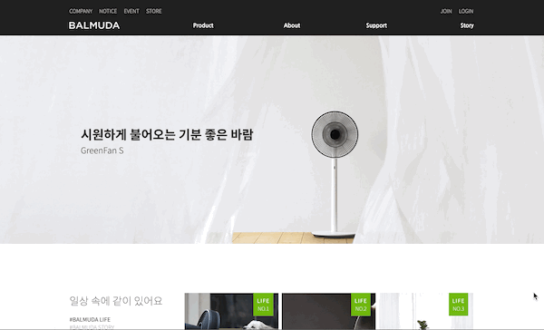
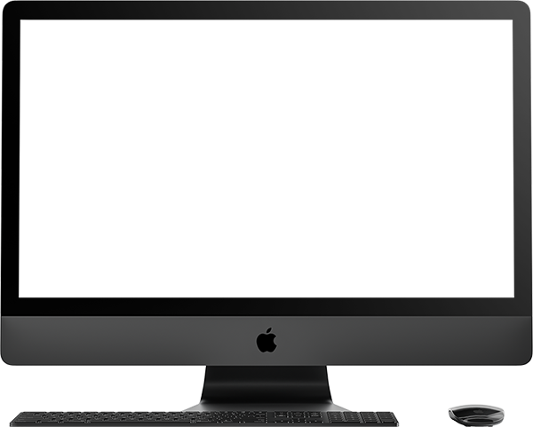
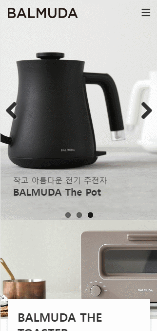
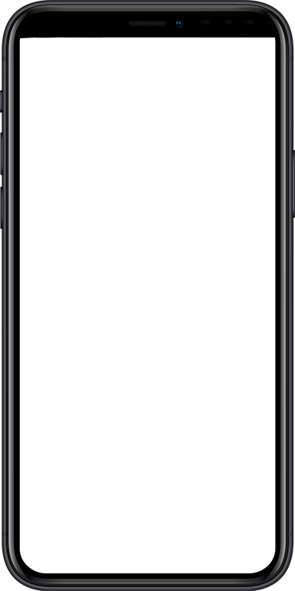
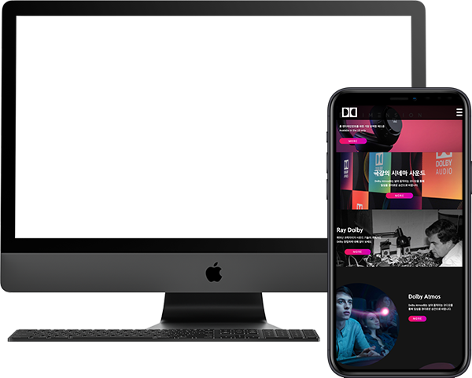

김수연 WEB PUBLISHER
- Birth.
- 1993.07.14
- Call.
- 010.3253.2261
- Email.
- qazsw@naver.com
- Skills(Develop)
- HTML5, CSS3, JavaScript, jQuery, Ajax, php(include)
- Skills(Design)
- Adobe Photoshop, illustrator, indesign
포트폴리오 기획 PPT 바로보기
GIT HUB 바로가기


PC WEB
- 발뮤다 웹사이트 제작
- 기존 웹사이트의 정리되지 않은 헤딩태그의 사용, 다양하지 않은 컨텐츠를 문제점으로 삼아 트렌드에 맞는 UI와 웹 표준을 지향하는 마크업으로 접근성을 고려하여 새롭게 구축하였습니다.
- 제작기간
- 2020. 05. 01 ~ 05. 21 (약 3주)
- 제작스킬
-
- Adobe Photoshop, Illustrator
- HTML5/CSS3, Javascript, jQuery, php(include)
- W3C 웹표준 마크업 검사, 웹접근성검사(K-WAH), 크로스브라우징 완료
View Site
PC WEB
- 비건 메거진 웹사이트 제작
- 기존 웹사이트의 산만한 Interface, Image Alt누락으로인한 접근성 부재를 문제점으로 삼아 트렌드에 맞는 UI와 웹 표준을 지향하는 마크업으로 접근성을 고려하여 새롭게 구축하였습니다.
- 제작기간
- 2020. 02. 03 ~ 02. 28 (약 1달)
- 제작스킬
-
- Adobe Photoshop, Illustrator
- HTML5/CSS3, Javascript, jQuery, Ajax(Json), php(include)
- W3C 웹표준 마크업 검사, 웹접근성검사(K-WAH), 크로스브라우징 완료
View Site


MOBILE WEB
- 발뮤다 모바일 사이트
- 메인화면에서 사용자가 원하는 경험을 중심으로 다양한 메뉴를 구분하고, 컨텐츠의 기능과 성격에 맞춰 위계를 재정렬한 모바일 버전입니다.
- 제작기간
- 2020. 03. 16 ~ 03. 27 (약 2주)
- 제작스킬
-
- Adobe Photoshop, Illustrator
- HTML5/CSS3, Javascript, jQuery
- CSS3(media query)와 스크립트를 이용한 기기별 해상도 서비스
- W3C 웹표준 마크업 검사, 웹접근성검사(K-WAH), 대표 기기별 테스트 완료
View Site


RESPONSIVE WEB
- Dolby 반응형 사이트
- 세계적인 음향회사 돌비사이트를 다양한 디바이스에서 폭 넓게 이용할 수 있도록 반응형 웹을 구축하였습니다.
- 제작기간
- 2019. 04. 06 ~ 04. 13 (약 1주)
- 제작스킬
-
- Adobe Photoshop, Illustrator, After Effects
- HTML5/CSS3(Media Query), Javascript, jQuery
- CSS3(Media Query)와 스크립트를 이용한 디바이스/해상도별 반응형 UI 구현
- W3C 웹표준 마크업 검사, 웹접근성검사(K-WAH), 대표 기기별 테스트 완료
View Site
WordPress WEB
- Kusmin tea 워드프레스
- 파리의 국민 티 '쿠스미 티' 사이트로써, 워드프레스를 이용해 반응형 웹을 구축하였습니다.
- 제작기간
- 2020. 04. 20 ~ 04. 23 (약 3일)
- 제작스킬
-
- Wordpress
- Adobe Photoshop, Illustrator
- Sydney 테마 사용
- Wordpress 플러그인을 사용한 레이아웃 커스터마이징
View Site